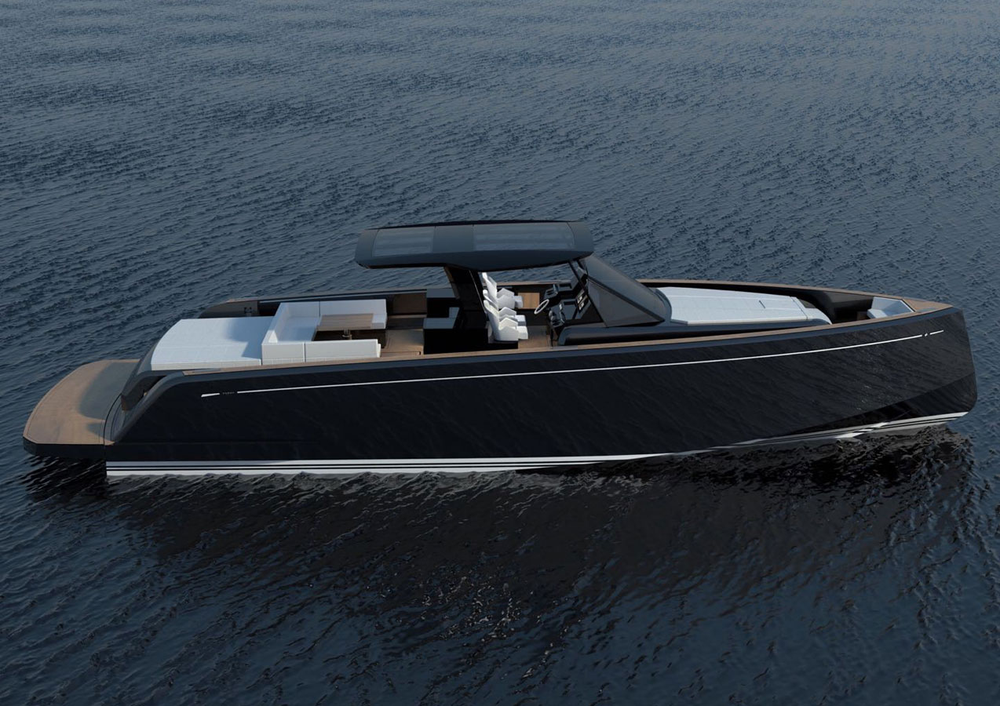
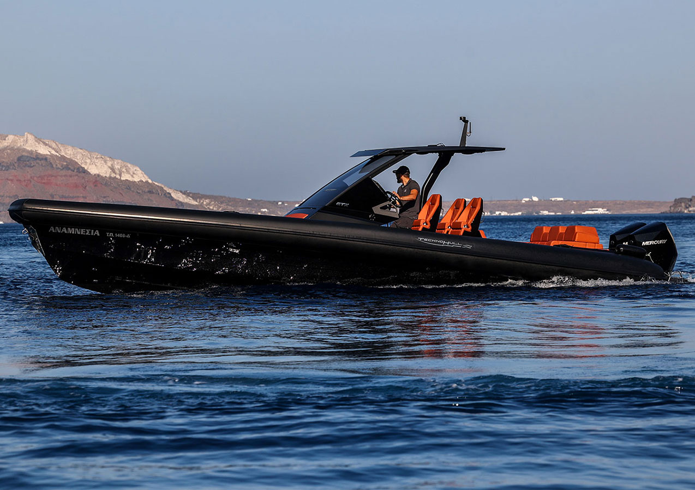

Why Go Private
The travel day, upgraded
Best For · Honeymoons, Short Trips, Families With Luggage
A private transfer isn't just a faster ferry. It's a different kind of day: no 6am check-out to make the only good departure, no scrum at the ramp, no hauling suitcases across a hot port. You leave from a quiet harbor near your hotel and arrive at a quiet harbor near the next one.
You set the clock. Late check-out, one more morning at the pool, then a 2pm departure — instead of building your whole day around a ferry timetable.
Small ports, not the big ones. Most crossings run from the closest practical harbor to your hotel, which usually means a shorter drive and no terminal at all.
Swim stop optional. On most routes we can add a stop at a beach or sea cave that you can only reach by boat, and turn the transfer into the best half-day of the trip.
This is the single upgrade my clients thank me for most, and it costs less than they expect when there are four or more of you.

The Routes That Work
Neighbors, not marathons
Sweet Spot · Crossings Under About 90 Minutes
Private boats are at their best between islands that are genuinely close. Cross the Cyclades' short gaps and you get a beautiful, comfortable ride; try to run Athens to Santorini on a small boat and you get an endurance test. These are the legs I book most.
Mykonos ↔ Paros & Antiparos. The workhorse. Also Mykonos ↔ Naxos, and Paros ↔ Naxos in barely any time at all.
Santorini ↔ Folegandros or Ios. The honeymoon move — a genuinely small island added to the trip without losing a day to the ferry.
Sifnos ↔ Milos. My favorite crossing in Greece. Short, sheltered on most days, and it links two islands whose ferry connection is genuinely thin — often a single awkward boat, or none at all.
Santorini ↔ Milos. The one that surprises people. Roughly two hours across open water on a fast boat, and it turns two islands that feel unrelated on a map into a natural pair.
Milos ↔ Serifos & the western Cyclades. The quiet side, where the ferry schedule is thinnest and a private boat helps most.
Longer legs, honestly. Mykonos to Santorini or anything out of Athens is possible, but it's a long ride in open water. For those I'll usually point you at a helicopter instead.
My rule: fly the long legs, sail the short ones. Helicopter from Athens, private boat between neighbors.

Good To Know Before You Book
The honest fine print
Read This · Before You Commit To A Date
A private boat is a small boat, and the Aegean has opinions. None of this is a reason not to do it — it's just what separates a smooth transfer from a memorable one for the wrong reasons.
The Meltemi gets a vote. In high summer the wind can push a crossing earlier in the day, change the route, or occasionally cancel it. I always build the plan so a cancelled boat doesn't cost you a hotel night.
Luggage has limits. Most boats handle a couple of large cases per cabin comfortably. If you're travelling heavy, tell me up front and I'll size the boat accordingly.
Pricing is per boat, not per person. Transfers start around €1,000 for a standard crossing, and go up from there with distance, boat size, and any swim stops you add along the way. Split between a family or two couples, it's a very different number than it sounds.
The hack: make the transfer your boat day. A private boat day around Milos runs about €1,400 on its own. A transfer with swim stops built in lands in similar territory — so instead of paying for a boat day and a ferry ticket, you pay once and arrive on the next island at the end of it.
Both ends need a car. Harbors aren't hotels. When I arrange the boat, the transfer on each side is part of the booking, not an afterthought.
Book it early in season. Late June through early September, the good captains and the good boats are spoken for weeks out.
Handled properly, it's the smoothest travel day of your trip. Handled casually, it's still a small boat in open water — so let's handle it properly.